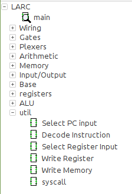

CPSC 220, Fall 2022
Lab 7: Starting Larc in Logisim
This week, you will start the construction of a Larc simulation in the Logisim circuit simulation program. You will be working in assigned groups. At the start of today's lab, your group should discuss how it will organize the work.
The folder /classes/cs220/Larc-in-Logisim has a folder for each group. All members of the group have access to that group's folder, and the group will turn in their completed project in that folder. You might want to keep all of your work there.
Next week, I will make available some test programs that can be loaded into the instruction memory, along with the expected result in data memory at the end of each program. You will continue to work on Larc-in-Logisim in lab next week, and it will be due the following week.
Some Notes
We discussed the basic structure of the Larc simulation in class on Wednesday. Here is a hand-drawn diagram, showing some of what was on the board in class, as a starting point. And here is the table of Larc instructions, which you might find helpful as you figure out how to wire the components of the Larc simulation together.
{kind=link}
 You should keep your work in several Logisim .circ files. One of them will be the main file, which defines the full Larc simulation. The other files can contain subcircuits that are used in the simulation. To add the circuits from a file to your main project file, use the command "Project" / "Load Library" / "Logisim Library". The file will be added to the list of folders in the upper left section of the Logisim window, and all the circuits from the file will be listed in that folder and available for use in circuits. All of the files should be kept in the same directory. Note that if you modify one of the helper files, you will need to re-open the main file for the change to become effective (or right-click the file name and select "Reload Library" from the popup menu). Using multiple files for the project will let you break up the work among group members. However, every member of a group should fully understand the complete project.
In my version, I used three extra files, one to hold the ALU, one to hold the registers, and one for various utility circuits and control circuits. The picture at the right shows the resulting component list in the Logisim window for the main file, with util opened to show the individual circuits that it contains. You might find it convenient to use several files for utility circuits, to make it easier to spread out the work.
Here are some notes about building a Larc simulation in Logiasim:
- Use the Logisim documentation, available in the "Help" menu, to understand how Logisim and its built-in components work. The "Library Reference" has complete documentation about each individual component.
- You should use Logisim Register components for the Larc PC and for the Larc registers. A Logisim register has an "Enable" input; you should use that input in the Register File to control whether data is written into the register in the current clock cycle. (You don't need to use it for the PC, since a new value is written to the PC in every clock cycle.)
- You should use a Logisim ROM component to represent the instruction memory. A ROM is very simple, with just an address input and a data output. You should set the number of bits for both address and data to 16. To set the contents of the ROM by hand, right-click and select "Edit". This will allow you to enter values into the entire memory. You could use this to enter some very simple test programs by hand. It is also possible to load a program from a file; you will do that next week.
- You should use a Logisim RAM component for the data memory. Set the number of data and address bits to 16. Set its "Data Interface" to "Separate Load and Store Ports." (The other modes are harder to use, and I don't fully understand how they work.) You will need to use the RAM's clock input, as well as its "Store" input, which is used to control whether data is written to the RAM during the current clock cycle.
- Logisim memory components are set to "trigger" on the rising clock edge by default. We mostly used falling clock edge in class. However, it really doesn't make a difference, and I used the default rising clock edge in my own Larc simulation. (However, you do need to be consistent for all memory components in the simulation.)
- You can also use any of Logisim's Arithmetic componendt and Wiring circuits (including Bit Extender). You can use Multiplexers and Decoders.
- The hard parts of the project are designing the Register File and the control circuits and wiring everything together correctly in the full Larc simulation. I suggest that your group work together on analyzing the control problem and designing the control circuits. For the other subcircuits, you might be able to divide up the work so that you can do some work individually. I encourage you to keep some backup copies of things that you get working along the way. However, the organization is all up to you.
- You should treat any syscall as a halt command. You can implement it by stopping the clock, that is, by stopping the clock output from reaching the RAM and registers, like you did in the previous lab.
Here are a few notes about debugging your simulation:
- Remember that you can "poke" a clock component, with the Poke Tool to turn it on and off by hand.
- You can "poke" any wire in the circuit to see what value it is carrying. This will be essential for debugging your work, since you can step though a program and check that all the input and output wires are carrying the values that you expect. Also, it is useful to set the Label property of inputs and outputs on your subcircuits so that when you add the subcircuit to the main circuit, hovering over an input or output will show the label.
- You can double-click a subcircuit, such as your Register File, with the Poke tool. This will open the subcircuit so you can see what's inside it. This can be useful for examining the wires in the subcircuit and for checking the values that are currently stored in registers.
- A Logisim register shows the value that it currently stores. If you "poke" a register, you can type a new value. A ROM or RAM component shows the content of several locations; if you "poke" a location, you can type in a new value. As you start building and testing your simulation, it can be useful to set PC to zero and poke an instruction into location zero of the instruction ROM and then check what happens in the rest of the circuit.
Before next week's lab, you should have completed the Register File and ALU, and you should have started the main project file. Ideally, you will also have thought about some of the control circuits or started to build them.